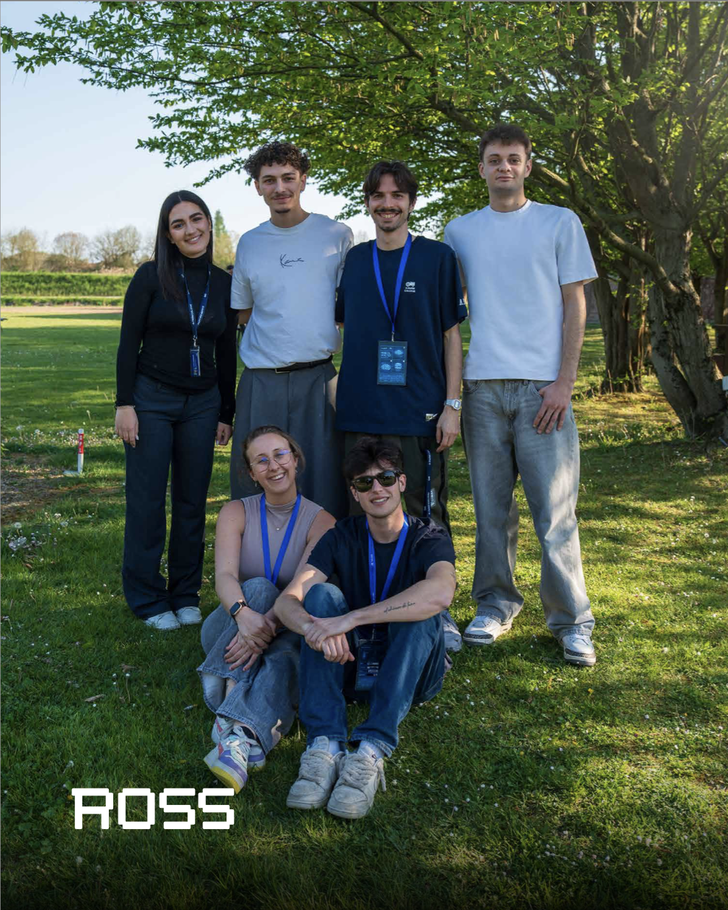
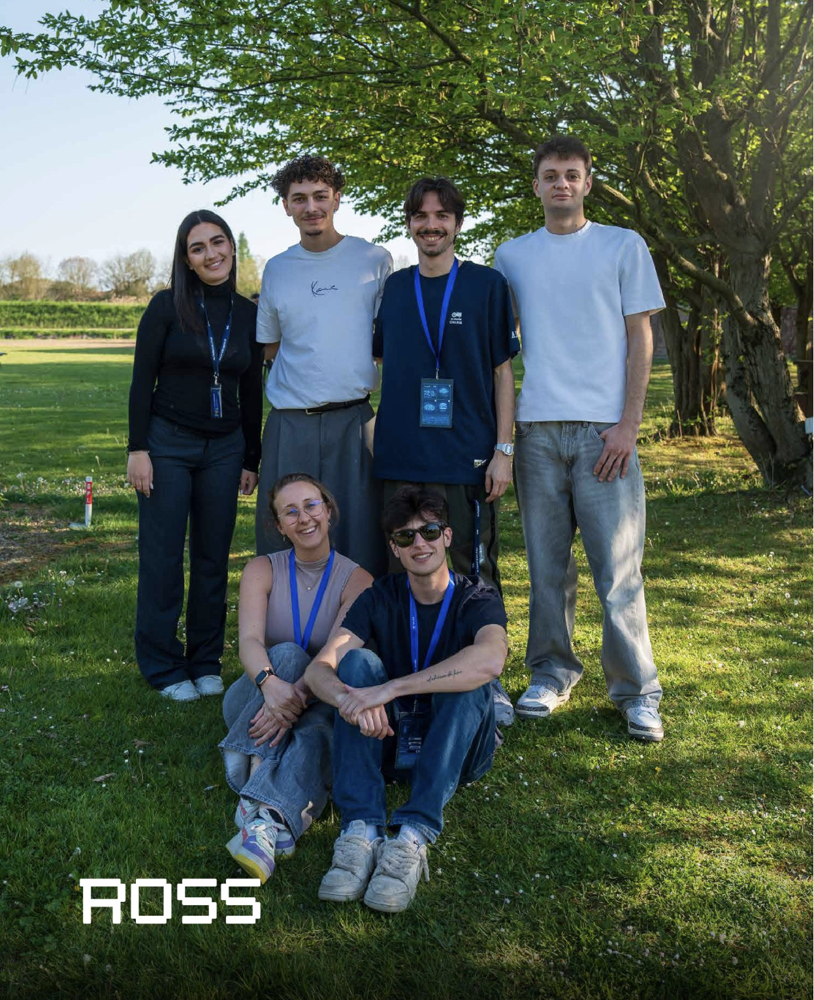
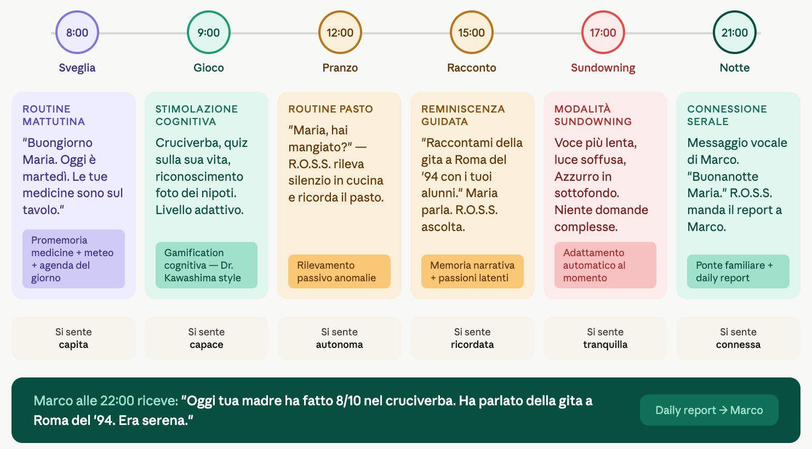

Who I am
I started at 17 with a dropshipping store. Alone: product sourcing, logistics, Meta Ads campaigns. No blueprint, no capital, no one telling me to do it. It didn't become a big business — but it confirmed something that hasn't changed since: I start things. Since then the projects have grown in complexity. A WhatsApp agent for a €150M wholesale market — because the research showed WhatsApp was already the channel, and building a new app would have been the wrong answer. A RAG voice agent for an aerospace manufacturer, delivered in a month. A startup killed when the financial model didn't close. And now R.O.S.S. — an AI companion for the elderly that I'm co-founding as Finance and Commercial Lead: market sizing, unit economics, investor relations, fundraising structure. I don't write the models. I build the case for why they should exist.
Selected work
AI companion for the elderly · Co-founder & Finance/Commercial Lead
April 2026 – present
RAG voice agent for aerospace · Team Lead
Oct – Nov 2025
WhatsApp AI agent for B2B food market
Mar – May 2025
Erasmus student platform · Pivot case study
2025–2026

Italy has 14.6M people over 65. Most eldercare technology treats them as patients to monitor — cameras, SOS buttons, biometric wearables. Every product in this space optimises for caregiver anxiety, not for the person living in that house. ROSS starts from the opposite hypothesis: the elderly person is not a condition to manage. She's someone to accompany.
The insight
The eldercare market is saturated with products the elderly reject — because they feel like surveillance. ElliQ, Paro, SOS buttons, GPS bracelets: our buyer (the adult child) has looked at all of them and excluded them, because he knows his mother won't accept them. The gap isn't technology. It's positioning.
The decision — "companion, not device" — isn't just marketing. It's the foundation of our regulatory strategy (AI Act Art. 50, non-MDR), our IP architecture (no biometric sensors, ever), and our technical design. The word "monitoring" is banned from every line of code, every pitch deck, every caregiver app label.
What we built
ROSS runs on a local-first architecture: on-device LLM (small, quantized, LoRA-adapted), speech-to-text and TTS entirely local, zero biometric sensors. The core is a biographical knowledge base — a structured map of the user's people, places, events, routines, and memories — which ROSS uses to hold real conversations, not generic chatbot exchanges.
Three presence modes: Active (ROSS approaches with narrative intent — guided by episodic memory, not biometric triggers), Silent (non-biometric absence detection sends Marco a narrative sentence, not an alert), Reactive (responds when Maria calls it). Every day, the family receives a Daily Report: a narrative letter about her day. Not a dashboard. A letter.
My role
I run the commercial and financial engine of ROSS. Financial models, unit economics, cap table, fundraising structure. Pricing hypothesis: €1,000 device + €40/month — less than one month of a live-in carer at €1,400/month average in Italy, for a product that works 24/7 without requiring Maria to accept a stranger in her home.
Market sizing: TAM Italy ~€3.8B (2.55M families), SAM ~€941M, SOM ~€34M in three years. TAM EU-27 ~€23B. I manage investor relations, own the WTP research methodology, and will structure the fundraising round.
Where we are
Selected top project at H-HACK (H-Farm Robotics Hackathon, April 2026) — the event screen read "The top projects making us say WOWWWWWWW." Now building through H-Farm's Venture Building Program. Patent 1 (conversational layer, F1–F10) in progress. Patent 2 (NLG for caregiver, app, hardware) in parallel development. Trademark deposit (EUIPO/UIBM, classes 9/28/42/44) before first external pilot.
The team presented ROSS at HUMAN+ Healthcare Dialogue 2026. We're closing the team (AI Full Stack Engineer, freelance → equity option), engaging patent counsel, and running first Wizard-of-Oz tests with elderly users before committing to hardware form factor.




H-HACK 2026 — selected among the top projects. · ROSS team. · Maria's day with R.O.S.S.
Team: Alessandro Di Mauro (Product & Comms), Alessandra Beretta (Institutional Relations & Ops), Luca Marzotto (Tech Architecture). Built within H-Farm's ecosystem.
MANTA Group supplies Leonardo and Boeing. Their operators work on the floor with 500+ pages of technical manuals — printed, indexed by hand, searched by memory. We had one month to change that.
The problem
Manual lookup on an aerospace manufacturing floor is slow, error-prone, and breaks flow. The information exists — it's trapped in PDFs. The question was how to make it accessible the way operators actually work: hands busy, eyes on the part, no time to type a search query.
What we built
A functional RAG-based AI voice agent. Voiceflow for the voice layer, a RAG pipeline ingesting the full technical documentation. Operators query 500+ pages via voice or text — answer in seconds, not minutes. No new hardware. No retraining. The knowledge base is the documentation MANTA already had.
Led a cross-university team of 4 (H-Farm College × Università di Puglia). Delivered a working MVP in a 1-month sprint. Pitched to a jury of representatives from 12 participating companies.
Why it matters
The same architecture — voice + retrieval + clean interface — can replace workflows that haven't changed in decades, in industries that have never had a reason to change them. Every knowledge-intensive field where the person doing the work can't stop to type is a version of this problem.
Challenge: Impact Puglia — H-Farm College × Università di Puglia. Cross-university team of 4.

A €150M+ wholesale produce market. Operators taking orders the same way they have for decades — phone calls, WhatsApp voice notes, paper slips. We were asked to design the digital layer. The research told us something that changed the design entirely.
The research finding
The assumption was that Agromercato.com needed a new app. Primary research said otherwise: WhatsApp was already the dominant channel on both sides of the transaction. Wholesalers used it to receive orders. Buyers used it to send them. Building a new app would mean asking people to change a behaviour that already worked.
The answer: don't fight the channel. Make it intelligent.
What we designed
A WhatsApp AI agent that centralises incoming orders for wholesalers and simplifies purchasing for professional buyers — without changing the interface either side already uses. The agent structures unstructured order messages, routes them correctly, and reduces coordination overhead on both sides.
Built in partnership with Abilita Srls as part of the scaling strategy for Agromercato.com, starting from a pilot with the Mercato Agroalimentare della Sardegna (€150M+ annual turnover).
The principle
The most AI-native choice is often not to build a new interface — it's to make the existing one intelligent. WhatsApp is infrastructure. The agent is the product. This distinction matters when building for markets where behaviour change is the biggest adoption barrier.


Ecommerce Food Conference — prima presentazione pubblica del prototipo. · H-Farm Startup Centre cohort, Spring 2025.
Ecommerce Food Conference — first public pitch of the prototype. · H-Farm Startup Centre Spring 2025 cohort.
Built within H-Farm Startup Centre Pre-Acceleration Program, in partnership with Abilita Srls.
We started with CheckTheStreet — an urban safety app for students navigating Italian cities at night. We built the product, mapped the personas, designed the B2B2C model. Then we built the financial model. €2 per enrolled student, universities paying. 36-month projection: revenues couldn't cover operating costs. And the content verification problem — an open crowdsourced safety platform in the wrong hands becomes a misinformation weapon. We couldn't solve it early-stage. So we didn't defend the solution. We questioned the problem.
The pivot
We asked: who experiences the information gap most intensely? Not the Italian student who partially knows the city and updates over time. The international student — arriving with zero local context, zero network, often a language barrier, for 6–12 months. The same problem, more acute, on a ticking clock.
From that question came LocaLì: not a safety tool, but the student layer of the city. Map & Discovery (finding the places locals know but tourists don't), Student Deals (aggregating the discounts scattered across ESN pages and window stickers nobody reads), Safe & Chill (crowdsourced contextual safety from students who just walked that route).
The problem is real
ESNsurvey XV (2024, N=17,855): only 34% of international students actively integrate with the city they arrive in. The 66% who don't — don't lack motivation. They lack tools.
The market doesn't need to be created: 50,000 international students arrive in Italy every year (+10.7% YoY), all starting from zero. Italy is the second-largest Erasmus destination in Europe — a natural beachhead for France, Spain, Germany, Netherlands. I was the user: I did Erasmus in Vilnius and navigated an unknown city through fragmented WhatsApp groups and tourist circuits. That experience built the first hypothesis.
The model
B2C freemium: Guest mode (free, see the map, hit a wall when you want to act) → Monthly €2.99 → Semester Pass €9.99. The conversion trigger is intentional friction at the moment of intent, not a time limit.
Market sizing built bottom-up from the student's digitally addressable wallet (€700–1,000/stay, €800 central estimate): TAM €5B (6.3M students globally), SAM €400M (Europe), SOM €40M (Italy beachhead, 50K students/year).
Entrepreneurship in Digital Age course — MSc Digital Transformation & Entrepreneurship, H-Farm College / University of Chichester, A.Y. 2025/2026.